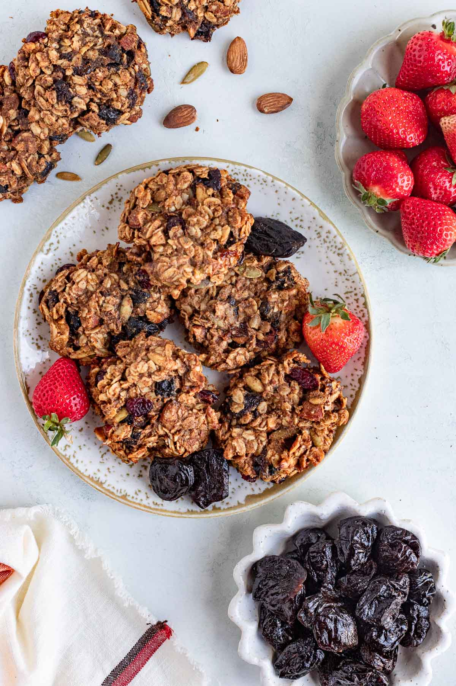

Oatmeal Cookies

Description
This oatmeal cookies are delicious, healthy and easy to make. Perfect for your milk, tea or coffe.
Ingredients
- 1 cup butter
- 2 eggs
- 1 tsp vanilla
- 2 cups sugar
- 2 cups flour
- 1.5 tsp cinnamon
- 1 tsp salt
- 3 cups oats
- cranberries/raisins/coconut/nuts (optional)
Steps
- Whisk butter, eggs, vanilla and sugar together
- Add and combine flour, cinnamon, salt, oats, and optional add-ins
- Mold and place ~24 golf sized balls of dough on trays with parchment paper
- Cook for ~10 minutes or until edges begin to brown
Home